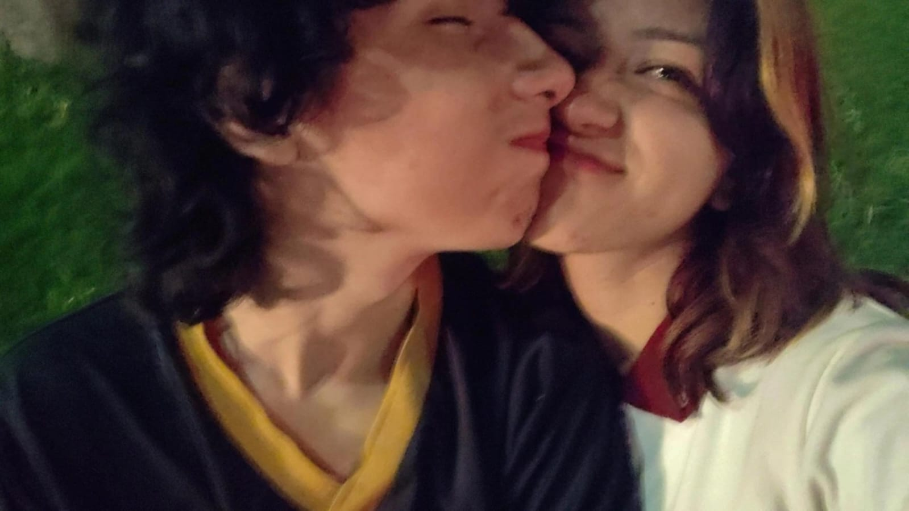
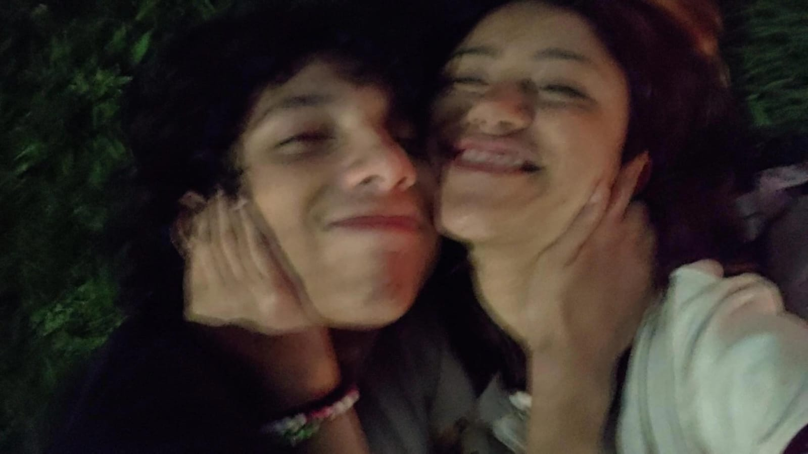

Zzz.
__Zzz es una de las personas mas hermosas que conozco; desde que llego a mi vida solo a hecho que sea mas bonita, cada mirada me llena de luz, cada suspiro es un alivio a mi corazon y todo lo que dice me hace sentir la niña mas hermosa de este mundo. Me da mucho miedo que algun dia piense en dejarme, de verdad no me imagino una vida si el, sin sus besos, sin sus abrazos y sin su hermoso olor, por eso no me cabe en la cabeza ¿como puede pensar que yo lo voy a dejar de amar algun dia? ¡eso jamas pasara! nunca me dejara de gustar, porque desde la primera vez que lo vi supe que era con quien queria pasar el resto de mi vida. Estoy dispuesta a morir por el, es ironico, porque el viviria por mi, es una de la cosas que mas me gusta de nuestra relacion +++++++pro, en todo este tiempo los dos hemos cambiado demaciado para que esto tan bonito que tenemos funcione y no se caiga, claro a tenido sus tropiesos, pero... supongo que esto es amor verdadero ¿no? No estaria mal que todo fuera de color rosa, pero eso le quitaria la trama, eso nos aburriria un poco, si no esque mucho; amo lo que somos, y me encanta imaginar en lo que nos comvertiremos mientras nuestra relacion crezca y crezca mas.
__Se que he tenido mis errores pero, mientras los arreglaba nunca deje de pensar en el, siempre estubo presente y de hecho es una de las personas que mas e extrañado, jamas habia deseado la presencia de nadie mas tanto como la de ese pibble, me hace mejorar en todos los sentidos, gracias a ese ser yo me quiero superar cada dia, siempre intento ser mi mejor version para que este orgulloso de mi y me acepte al 1000%, no 100 ¡NONO! al 1000%. Un dia nos vamos a casar, yo estoy segura de eso, bailaremos "You and Me" de Jennie en dicha boda, tendremos una casita -me va a dejar pintarla de rosa jeje-, tendremos minimo 2 hijos, maximo 10, se llamaran Maria Jose e Ian Ariel; tendremos pibbles y un gato, seremos muy felices porque ambos sabemos que lo unico que necesitamos es al otro. El dia que Zzz me falte yo me matare, lo juro, mi vida no tendria sentido sin el, me hace sentir tan viva tan unica, lo unico que deseo en esta vida es tenerlo pegadito a mi todo el tiempo, siempre demostrandonos amor, sin separarnos ni un segundo, se que en parte nos la pasamos separados por mi culpa, pero prometo trabjar tambien en eso, y asi poder pasar mas tiempo con la persona que mas amo. De verddad me tiene muy enamorada, no sabia que yo podia actuar asi, con el e descubierto muchas cosas de mi, cosas que ni yo sabia que estaban ahi, todo este tiempo solo se a dedicado a leerme para asi poder conocerme, amo eso porque llego a ver cosas las cuales yo creian que eran estupidaz, pero el las ve hermosas, en serio me hace sentir tan especial... Laik por eso!1!1!1!1!!!!111.

